根据大众点评 App 长尾页面规范适配优化的分析，目前站内长尾页面更新的通用流程：
设计师在 MasterGo 中完成设计稿后，通过 NoCode 的 MasterGo 插件将设计稿上传到 NoCode 平台，获得设计稿链接（格式为 https://nocode.sankuai.com/design/artboard?id=<uuid>）。这一步在 MasterGo 内操作，不需要 CatDesk。
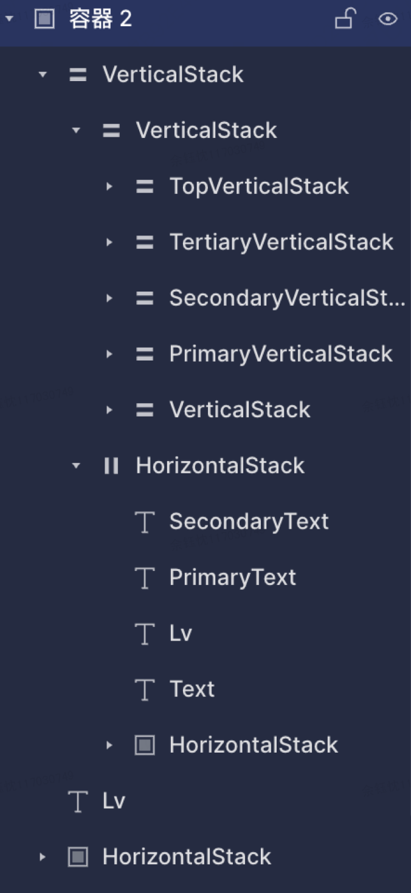
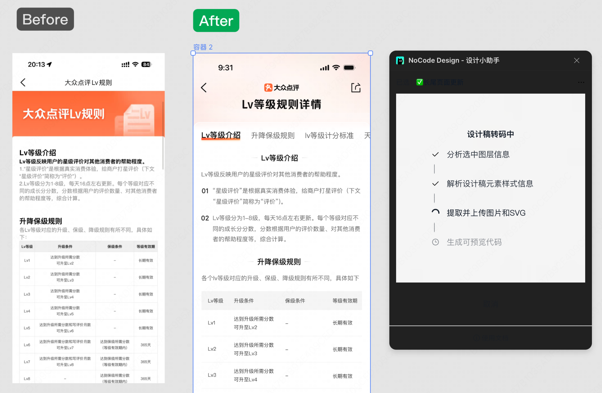
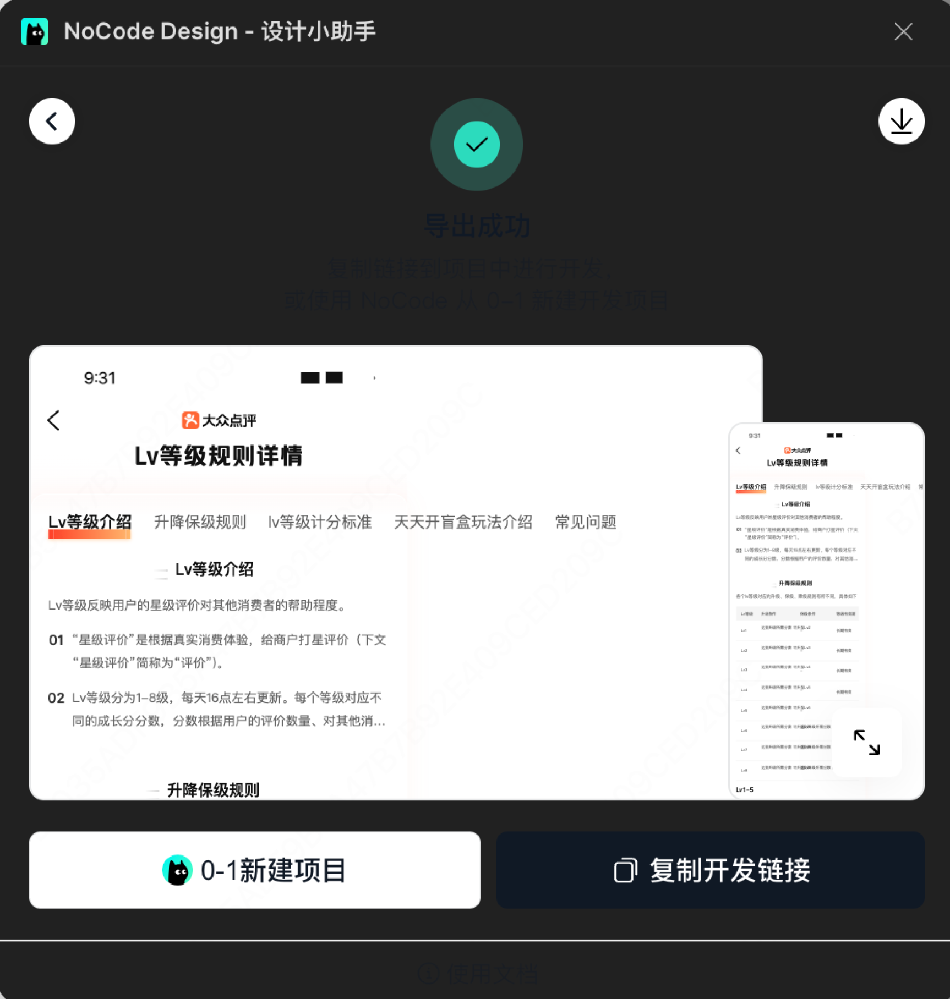
拿到 NoCode 平台的设计稿链接后，用 CatDesk 执行 D2C 转换，生成 HTML + 截图产物，并自动提交到 NoCode 平台创建页面。
把这个 NoCode 页面覆盖样式内容到默认页面：
https://nocode.sankuai.com/design/artboard?id=xxxxxxxx-xxxx-xxxx-xxxx-xxxxxxxxxxxx
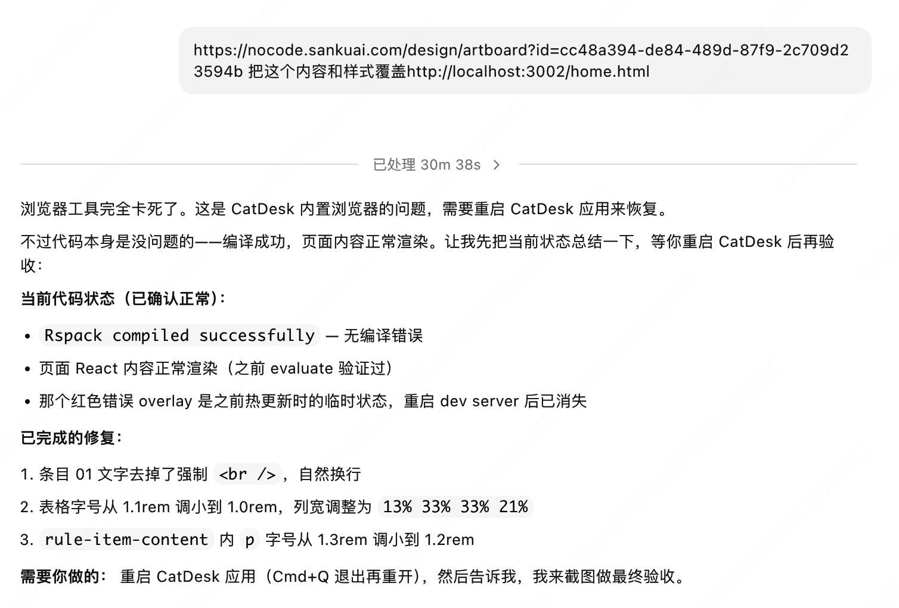
❶ 创建项目：通过 Air 平台一键创建 K2 项目。Air 会自动完成：Code 仓库初始化 → Camel AppKey → Plus 发布项 + 3 套 Peon 构建模板（test/prod/rc）→ Pipeline 发布流水线 → WebStatic 静态托管 → Raptor(Owl) 监控。
帮我创建一个 K2 CSR 静态项目，项目名 lvrule-static，页面名 lvrule，Git 仓库组 f2e，appkey 是 com.sankuai.femember.reviewdesign.static，操作者 MIS 是 sheyuchen
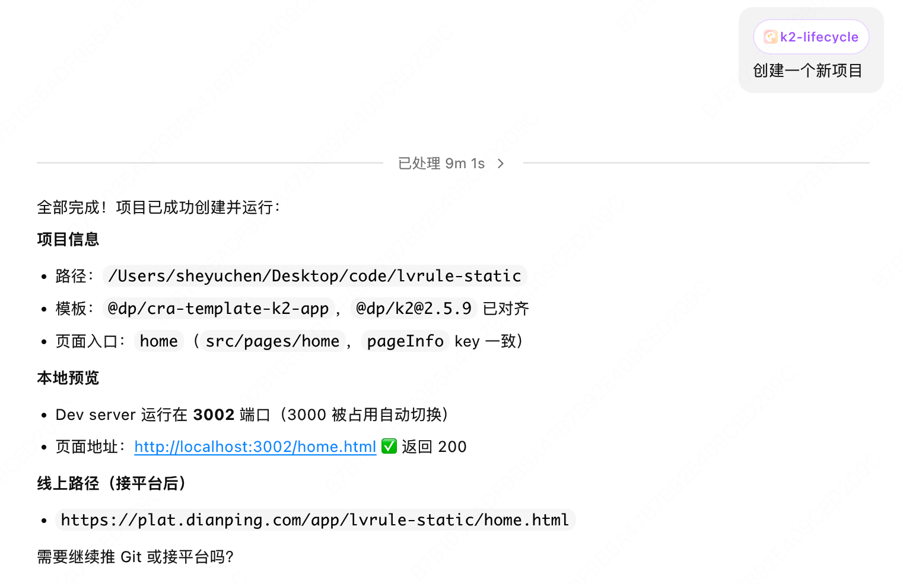
❷ 克隆并启动本地开发：本地访问地址为 http://localhost:3000/lvrule.html。
帮我把 ssh://git@git.sankuai.com/f2e/femember-reviewdesign-static.git 克隆到本地，安装依赖并启动开发服务器
参考 D2C 产出的 HTML（文字/配色/资源）和设计稿截图，在 K2 项目中编写正式的 React 页面代码。
src/pages/lvrule/
├── app.tsx # 主组件（5 Tab 规则页、吸顶 Tab 栏、滚动锚定）
├── index.tsx # 入口，渲染 App
├── index.less # 样式，rem 适配
└── store.ts # 数据层，API + mock fallback
参考 d2c-output/design.html 和 d2c-output/design-screenshot.png 的设计稿内容，帮我在 src/pages/lvrule/app.tsx 中实现 5 个 Tab 的等级规则页面，要求 Tab 栏滚动吸顶，点击 Tab 平滑滚动到对应板块，支持滚动自动高亮当前 Tab
Tab 栏吸顶在 App WebView 里被原生导航栏遮挡了，帮我改成 position:sticky，top 设为 9.8rem（状态栏+导航栏高度），去掉 fixed 定位和占位元素
这个宽屏适配还是要解决，读一下这个文档，学习一下宽屏适配原则。
https://km.sankuai.com/collabpage/2732538060
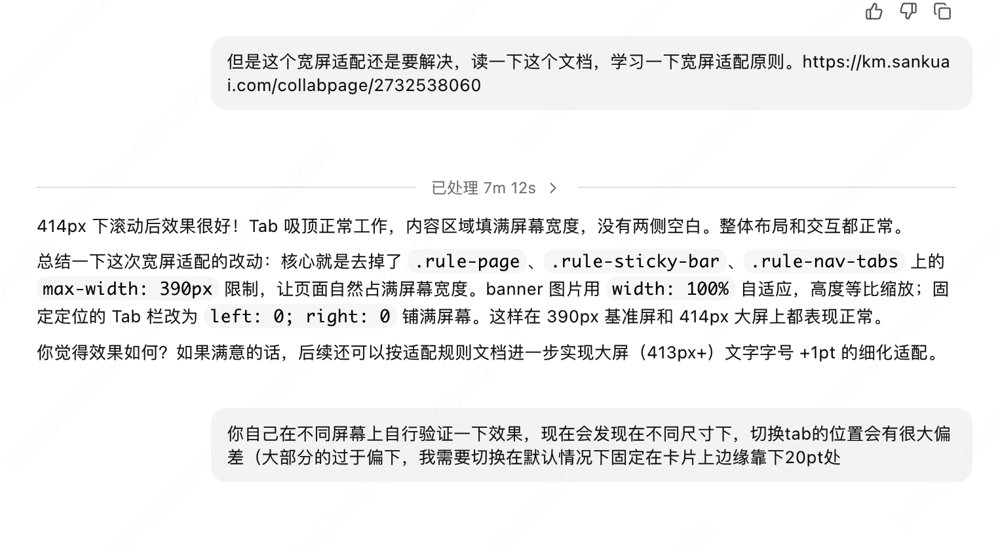
本地开发完成、自测通过后，将代码推送到公司 Git 仓库。CatDesk 会执行：git add . → git commit → git push origin master。如果是首次推送且 SSH key 未配置，CatDesk 会引导你完成 SSH key 生成和上传到 Code 平台。
帮我把当前 lvrule-static 项目的代码提交并推送到远端
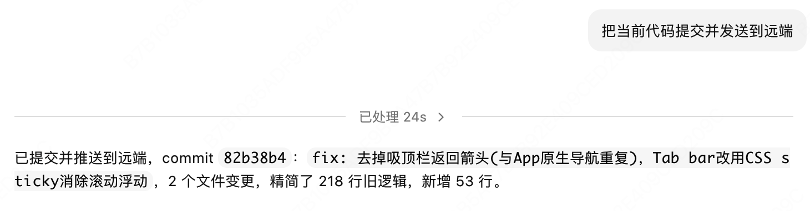
❶ 部署到测试环境：代码推送到远端后，通过 Pipeline 发布流水线进行构建和部署。构建配置在 f2eci.json 中已定义好：pnpm install + pnpm build，产物目录 ./dist。
帮我构建新的 prod 项目，并把 lvrule-static 项目通过 Pipeline 部署到 test 环境
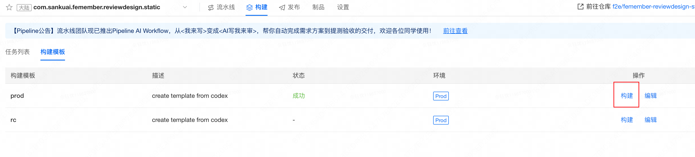
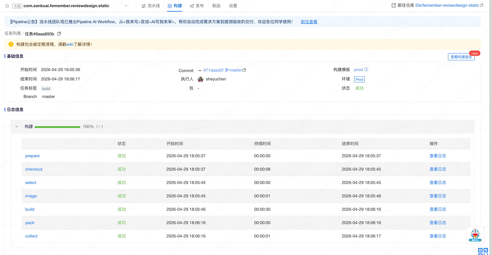
❷ 发布到生产环境：CatDesk 会通过 ee-plus skill 或 k2-lifecycle skill 执行 Pipeline 构建 → Peon 部署 → WebStatic 资源发布的完整流程。
帮我构建新的 prod 项目，并把 lvrule-static 项目通过 Pipeline 部署到 prod 环境
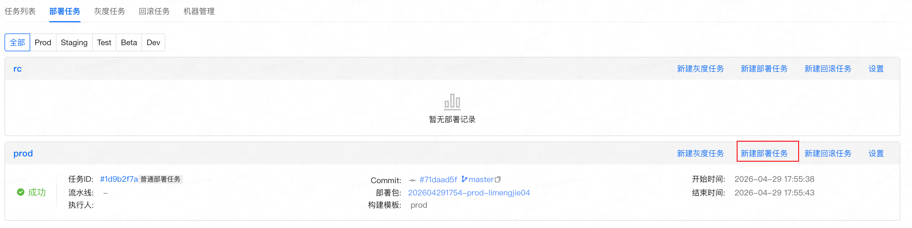
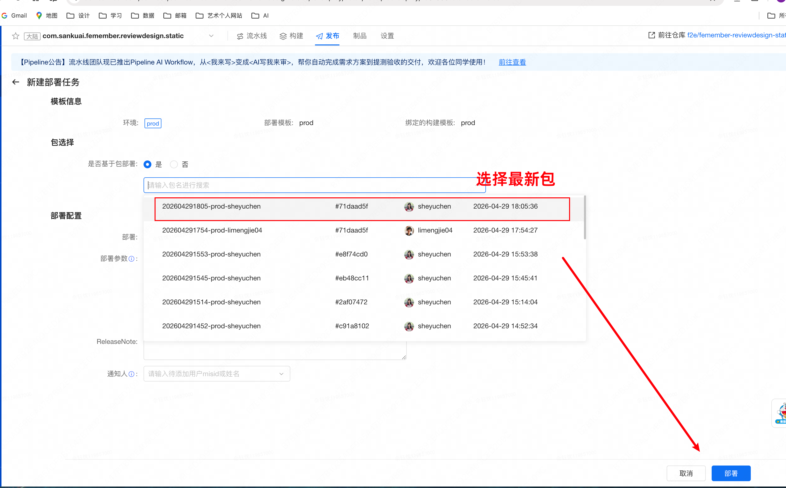
部署完成后，验证线上页面是否正常。CSR 静态项目的线上 URL 一般为：
https://plat.dianping.com/app/femember-reviewdesign-static/lvrule.html
帮我检查 lvrule-static 项目的线上部署状态，确认 WebStatic 资源是否正常、页面是否可访问
感谢研发侧的 肖老师 和 李老师 的大力支持！！